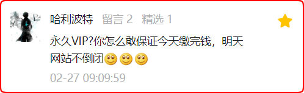

C语言中文网会倒闭吗？数据会丢失吗？
前些天，站长在公众号上限量销售了一波永久 VIP 会员，有粉丝在评论区提出了一个尖锐的问题：
这个问题点赞很多，应该说出了不少粉丝的心声。
是呀，卷款跑路的案例太多了，都是血淋淋的教训，大家质疑C语言中文网也是理所当然，我也表示支持。
今天，我不逃避，也不狡辩，正式并且诚恳地回答一下这个问题。
首先，我没法保证C语言中文网不倒闭！任何企业都有倒闭的一天，不管它规模有多大；C语言中文网只是一家小公司，它只会倒闭得更快。
但是，截止到 2023 年 3 月份，C语言中文网已经运营 11 年了，目前的流量还是比较稳定的，平均每天超过 10W UV，所以它在近期是不会倒闭的，大家可以放心使用。
至于 5 年或者 10 年以后，谁说得准呢，中间有太多不可抗力了。那个时候大陆一旦收复台湾，可能连域名都被美帝屏蔽了。
还有，如果哪天来了一位金主爸爸，特别看好C语言中文网的发展前景，愿意溢价收购，说不定我就卖了。虽然我之前拒绝了 380W，但是我可没说会拒绝 3800W，哈哈。
你看，听我这么一说，C语言中文网是不是非常脆弱？
没错，有太多力量/太多昏招/太多诱惑可以断送C语言中文网的前途，所以它的抗击打能力并不强，大家千万不要有过高的期待。
在这个依仗平台（腾讯、百度、阿里、字节、美团等）的创业环境中，突然挂掉的公司比比皆是。
可能你昨天刚刚制定了一个宏大的计划，但是平台在晚上更新了一个算法，今天你的流量就没了，公司就关门大吉了。哭吧闹吧悔恨吧痛骂吧，都无济于事，你什么都改变不了。
或许你真的做得过分了，或许你只是被误伤，或许你影响了平台利益，具体原因你也不清楚，反正就是这么不明不白的死了。
C语言中文网也是靠平台赏饭吃的，我每天都在提心吊胆，所以从来不敢玩黑帽，只敢按部就班搞原创，这样能极大降低躺枪的概率。
第一，如果公司倒闭了，或者网站没有流量了，那我顶多是不继续运营了，网站本身还可以一直放着的，反正域名和数据都在。
放心，C语言中文网是一颗金蛋，多少都会有点收入，我才舍不得扔了呢。
第二，如果网站转让了，那就由新任站长负责运营。
第三，如果以上两条都失效了，那我会换个域名重新上线网站，或者把所有教程打包成 zip/rar 供大家下载，以保证大家能够顺利学习。
第四，如果美帝屏蔽了域名，那我就用中国的 cn 域名。
第五，如果我不采取任何应对办法，那我可能会面临法律制裁。
尼玛，不就是每年几百块钱的服务器费用，再加上每年几十块钱的域名费用吗，我才不愿意去承担那种风险呢，除非我疯了，或者连这点钱都拿不出来了。
第六，如果我突然挂了，或者突然老年痴呆症了，那大家就放过我吧，千万不要再为难我了，因为我实在无能为力了。
人死账黄，咱们就这么愉快地散伙吧。

这个问题点赞很多，应该说出了不少粉丝的心声。
是呀，卷款跑路的案例太多了，都是血淋淋的教训，大家质疑C语言中文网也是理所当然，我也表示支持。
今天，我不逃避，也不狡辩，正式并且诚恳地回答一下这个问题。
首先，我没法保证C语言中文网不倒闭！任何企业都有倒闭的一天，不管它规模有多大；C语言中文网只是一家小公司，它只会倒闭得更快。
但是，截止到 2023 年 3 月份，C语言中文网已经运营 11 年了，目前的流量还是比较稳定的，平均每天超过 10W UV，所以它在近期是不会倒闭的，大家可以放心使用。
至于 5 年或者 10 年以后，谁说得准呢，中间有太多不可抗力了。那个时候大陆一旦收复台湾，可能连域名都被美帝屏蔽了。
还有，如果哪天来了一位金主爸爸，特别看好C语言中文网的发展前景，愿意溢价收购，说不定我就卖了。虽然我之前拒绝了 380W，但是我可没说会拒绝 3800W，哈哈。
你看，听我这么一说，C语言中文网是不是非常脆弱？
没错，有太多力量/太多昏招/太多诱惑可以断送C语言中文网的前途，所以它的抗击打能力并不强，大家千万不要有过高的期待。
在这个依仗平台（腾讯、百度、阿里、字节、美团等）的创业环境中，突然挂掉的公司比比皆是。
可能你昨天刚刚制定了一个宏大的计划，但是平台在晚上更新了一个算法，今天你的流量就没了，公司就关门大吉了。哭吧闹吧悔恨吧痛骂吧，都无济于事，你什么都改变不了。
或许你真的做得过分了，或许你只是被误伤，或许你影响了平台利益，具体原因你也不清楚，反正就是这么不明不白的死了。
C语言中文网也是靠平台赏饭吃的，我每天都在提心吊胆，所以从来不敢玩黑帽，只敢按部就班搞原创，这样能极大降低躺枪的概率。
我的应对策略
既然知道C语言中文网不稳定，那我肯定要替大家替自己想好退路，所以接下来，我就把我的应对策略公布一下。第一，如果公司倒闭了，或者网站没有流量了，那我顶多是不继续运营了，网站本身还可以一直放着的，反正域名和数据都在。
放心，C语言中文网是一颗金蛋，多少都会有点收入，我才舍不得扔了呢。
第二，如果网站转让了，那就由新任站长负责运营。
第三，如果以上两条都失效了，那我会换个域名重新上线网站，或者把所有教程打包成 zip/rar 供大家下载，以保证大家能够顺利学习。
第四，如果美帝屏蔽了域名，那我就用中国的 cn 域名。
第五，如果我不采取任何应对办法，那我可能会面临法律制裁。
尼玛，不就是每年几百块钱的服务器费用，再加上每年几十块钱的域名费用吗，我才不愿意去承担那种风险呢，除非我疯了，或者连这点钱都拿不出来了。
第六，如果我突然挂了，或者突然老年痴呆症了，那大家就放过我吧，千万不要再为难我了，因为我实在无能为力了。
人死账黄，咱们就这么愉快地散伙吧。
总结
说了这么多，又丧气又无奈，不知道大家听明白没有，我想表达的核心意思是：虽然我不能保证C语言中文网永不倒闭，但是我可以利用一种低成本的方式化解任何危机，让大家能够继续阅读原有教程。
所以，永久 VIP 会员的真正含义是：只要我没有挂掉，或者没有变傻，你就可以一直阅读C语言中文网的所有教程。
嗯，这是一种承诺，也是一种责任，更是一种畏惧，请大家放心，我跑不了的，也没必要跑。关注公众号「站长严长生」，在手机上阅读所有教程，随时随地都能学习。内含一款搜索神器，免费下载全网书籍和视频。

微信扫码关注公众号